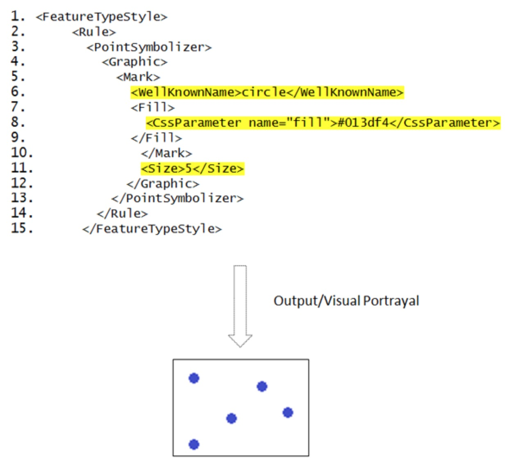

Style Layer Descriptor (SLD)¶
Introduction¶
Geospatial data (vector and raster) have no intrinsic visual component.
In order to see data, it must be styled.
Styling specifies color, thickness, and other visible attributes used to render data on a map.
A WMS provides a set of style options for each data set; however these are preconfigured by the server, and the user cannot create, inspect, modify a style.
SLD¶
The Styled Layer Descriptor (SLD) is a standard that enables an application to configure in an XML document how to properly portray layers and legends in a WMS.
It uses Symbology Ending (SE) to specify styling of features and coverages.
The SLD Profile of WMS enhances a WMS with additional operations to support styling of features from WFS and coverages from WCS.
History¶
Version number |
Release date |
Summary of Changes |
|---|---|---|
1.1 |
2007-06-29 |
“1.0 specification was split into SE and SLD, more functionality was added” |
1.0 |
2002-09-19 |
Versions 1.1 - OGC 05-078r4 is the latest version.
Test Suites and Implementations¶
Test Suite
No test suite exists for SLD.
Implementations
Implementations can be found at the OGC implementation database
Usage¶
Communities that have WMS, WFS and WCS and want to configure how the data looks can use SLD. It can be used to configure layers or to configure the styles of features based on an attribute.
It is require to create an XML document that follows the SLD XML Schema. Most servers that support WMS provide a user interface or other mechanism to create SLDs. An SLD is the glue between a Symbology Encoding and WMS Layers
Relation to other OGC Standards¶
WMS: SLD provides a style to portray features and create a layer in WMS. A WMS profile that defines operations to support SLD is also available as OGC 05-078r4
WFS: a WMS SLD profile that supports portrayal of features is called a Feature Portrayal Service (FPS). It is define in the document OGC 05-078r4. The WMS SLD enables proper portrayal of GML data.
WCS: A WMS SLD profile that supports portrayal of coverages is called Coverage Portrayal Service (CPS). It is define in the document OGC 05-078r4. The WMS SLD allows to properly portray Coverage data.
Symbology Encoding (SE):
Basic Example¶
SLD XML document describing how point data can be styled as blue circles with a diameter of 5 pixels.
{kind=link}
More Examples¶
The GeoServer SLD Cookbook provides examples of SLDs for points, lines, polygons and raster.